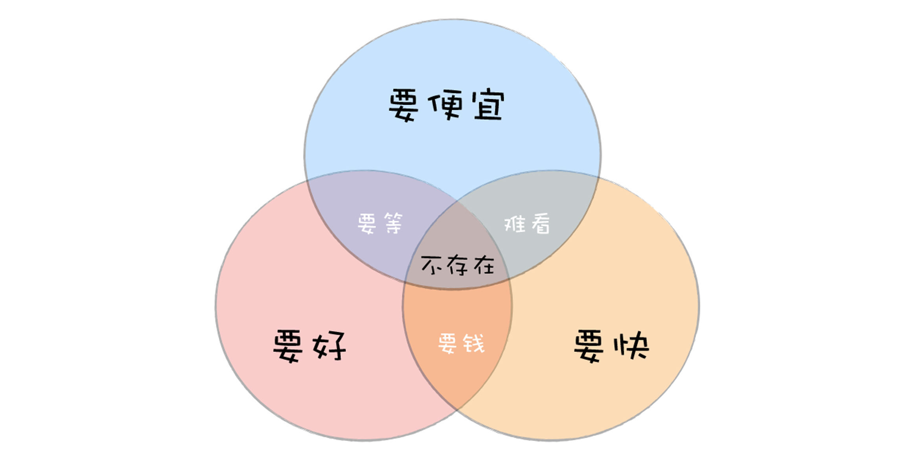

- 00 开篇词 你为什么应该学好软件工程？.md.html
- 01 到底应该怎样理解软件工程？.md.html
- 02 工程思维：把每件事都当作一个项目来推进.md.html
- 03 瀑布模型：像工厂流水线一样把软件开发分层化.md.html
- 04 瀑布模型之外，还有哪些开发模型？.md.html
- 05 敏捷开发到底是想解决什么问题？.md.html
- 06 大厂都在用哪些敏捷方法？（上）.md.html
- 07 大厂都在用哪些敏捷方法？（下）.md.html
- 08 怎样平衡软件质量与时间成本范围的关系？.md.html
- 09 为什么软件工程项目普遍不重视可行性分析？.md.html
- 10 如果你想技术转管理，先来试试管好一个项目.md.html
- 11 项目计划：代码未动，计划先行.md.html
- 12 流程和规范：红绿灯不是约束，而是用来提高效率.md.html
- 13 白天开会，加班写代码的节奏怎么破？.md.html
- 14 项目管理工具：一切管理问题，都应思考能否通过工具解决.md.html
- 15 风险管理：不能盲目乐观，凡事都应该有B计划.md.html
- 16 怎样才能写好项目文档？.md.html
- 17 需求分析到底要分析什么？怎么分析？.md.html
- 18 原型设计：如何用最小的代价完成产品特性？.md.html
- 19 作为程序员，你应该有产品意识.md.html
- 20 如何应对让人头疼的需求变更问题？.md.html
- 21 架构设计：普通程序员也能实现复杂系统？.md.html
- 22 如何为项目做好技术选型？.md.html
- 23 架构师：不想当架构师的程序员不是好程序员.md.html
- 24 技术债务：是继续修修补补凑合着用，还是推翻重来？.md.html
- 25 有哪些方法可以提高开发效率？.md.html
- 26 持续交付：如何做到随时发布新版本到生产环境？.md.html
- 27 软件工程师的核心竞争力是什么？（上）.md.html
- 28 软件工程师的核心竞争力是什么？（下）.md.html
- 29 自动化测试：如何把Bug杀死在摇篮里？.md.html
- 30 用好源代码管理工具，让你的协作更高效.md.html
- 31 软件测试要为产品质量负责吗？.md.html
- 32 软件测试：什么样的公司需要专职测试？.md.html
- 33 测试工具：为什么不应该通过QQ微信邮件报Bug？.md.html
- 34 账号密码泄露成灾，应该怎样预防？.md.html
- 35 版本发布：软件上线只是新的开始.md.html
- 36 DevOps工程师到底要做什么事情？.md.html
- 37 遇到线上故障，你和高手的差距在哪里？.md.html
- 38 日志管理：如何借助工具快速发现和定位产品问题 ？.md.html
- 39 项目总结：做好项目复盘，把经验变成能力.md.html
- 40 最佳实践：小团队如何应用软件工程？.md.html
- 41 为什么程序员的业余项目大多都死了？.md.html
- 42 反面案例：盘点那些失败的软件项目.md.html
- 43 以VS Code为例，看大型开源项目是如何应用软件工程的？.md.html
- 44 微软、谷歌、阿里巴巴等大厂是怎样应用软件工程的？.md.html
- 45 从软件工程的角度看微服务、云计算、人工智能这些新技术.md.html
- 一问一答第1期 30个软件开发常见问题解决策略.md.html
- 一问一答第2期 30个软件开发常见问题解决策略.md.html
- 一问一答第3期 18个软件开发常见问题解决策略.md.html
- 一问一答第4期 14个软件开发常见问题解决策略.md.html
- 一问一答第5期 22个软件开发常见问题解决策略.md.html
- 学习攻略 怎样学好软件工程？.md.html
- 特别放送 从软件工程的角度解读任正非的新年公开信.md.html
- 结束语 万事皆项目，软件工程无处不在.md.html
特别放送 从软件工程的角度解读任正非的新年公开信
你好，我是宝玉。
2019 年 1 月，任正非的那封《全面提升软件工程能力与实践，打造可信的高质量产品》公开信在朋友圈刷屏了。作为软件工程专业出身的程序员，这封公开信自然是引起了我的好奇，仔细阅读之下，确实让我大吃一惊。
于是，我从软件工程的角度对这封公开信进行了解读。在我们专栏内容正式更新前，我将它作为特别放送分享给你，希望可以帮助你更好地理解软件工程。
这封信看似像八股文一般，但细看之下，可以发现作者对于软件工程的理解确实非常深刻，各种专业术语信手拈来，比喻恰到好处。
我对华为的研发其实一直挺好奇的，从传统的硬件公司，到现在软硬件齐头并进，华为手机销量都已经超过了苹果，可见华为的软硬件研发实力早已处于全球领先水平。信中提到：
二十年前的 IPD 变革，重构了我们的研发模式，实现了从依赖个人、偶然性推出成功产品，到制度化、持续地推出高质量产品的转变。
这一句话，也揭示了华为的软件研发能做到全球领先水平的原因。
华为是在 1999 年开始从 IBM 引进 IPD 的，到今年 2019 年正好 20 年，在过去的 20 年里，IPD 帮助华为从游击队变成了正规军，研发队伍从几千人到几万人，软件产品也覆盖到手机操作系统、应用、云服务。
我对 IPD 是不甚了解的，只知道 IPD（Integrated Product Development，集成产品开发）是一种产品开发方法，但如果说软件产品的开发方法，我是比较熟悉的，那就是软件工程。
任正非发出的这封信的大背景也很特殊，2018 年中美贸易战开始，中兴、华为首当其冲成为美国开刀的对象，跟风站队的澳大利亚、新西兰、英国也跳出来抵制华为，说华为不安全，可能含有间谍软件，窃听国家机密。这帽子一扣是很难扯清的，这就是为什么整封信从标题开始，一共 17 次提到两个关键字：可信。
只有让客户觉得华为的产品“可信”，华为才能尽快走出这场危机，那么怎么才能做到可信呢？
如果你是餐厅老板，有人造谣你的厨房脏乱差，员工上完厕所不洗手，你怎么办？最好的办法自然是用先进的管理流程，并且让整个做菜的过程尽可能公开透明。
所以信中有这样一句话：
我们要转变观念，追求打造可信的高质量产品，不仅仅是功能、特性的高质量，也包括产品开发到交付过程的高质量。
要转变观念，不再只认结果的质量，还要追求过程质量了！而如何追求过程质量呢？那就是要“全面提升软件工程能力和实践”。
如果信到此为止，也就是个普通官方“八股文”。领导们嘛，可不就是喜欢指个大方向，说你们要用软件工程，要实施软件工程，至于怎么用，那是你们的事情，毕竟做领导的哪有几个真的懂软件工程，难得的是这封信居然有很多具体怎么做的细节内容。
以下，我带你看看这封信都提到了哪些具体到操作层面的问题。
1. 软件项目管理金三角
先看这一句：
我们各级管理者和全体员工都不得以进度、功能、特性等为理由来降低可信的要求，确保可信的要求在执行过程中不变形。
振聋发聩呀同志们，热泪盈眶呀！生活中有多少次这样的情况发生：三个月的项目，老板说你一个月就要给我做完；做到一半的项目，PM 说这个功能很重要，我们要加上去。最终怎么办？牺牲质量呗！又想要马儿跑得快，又想要马儿不吃草，天底下哪有那么好的事情。
软件工程里面早就告诉我们了：时间（多久可以完成）、范围（需要实现多少功能）、成本（花多少钱）这三个要素直接决定了产品的质量（产品的质量，客户的满意度）。

希望各位老板别光学乔布斯，也学学任正非！想要员工天天加班，还想着少发工资，还要产品质量好，做得快，这不现实呀！

首先得明白一个最浅显的道理：想要“多、快、好、省”都占着，这是不存在的，你只能选两样。想要便宜还想要质量好，那就得等；想要快还想要质量好，那就得多花钱；要想便宜做的又快，那就得接受质量差！
2. 自我精进
2018 年底，程序员被企业裁掉的不少，很多程序员开始担忧起前景来。关于这一点，这封信中也提到了一些指导意见，如果你能达到以下要求，应该是不必担心裁员的。
我们要从最基础的编码质量做起，视高质量代码为尊严和个人声誉。代码就像是高楼大厦的一砖一瓦，没有高质量的代码，可信的产品就是空中楼阁。我们要优化并遵循公司各种编程规范，遵从架构与设计原则，熟练使用各种编程库和 API，编写出简洁、规范、可读性强、健壮安全的代码。
这一段是说给我们程序员看的，这其实也是对程序员的基本要求，大家看看自己，看看身边，真能做到的有多少？像我一样觉得自己还做的不够好的，咱还是努力学习吧，多练练，多用点心肯定更没问题的。
3. 关于架构
讲完了程序员的自我精进，信中又开始说架构师了：
我们要深刻理解架构的核心要素，基于可信导向来进行架构与设计。
看到没有，又提到可信了，架构设计的时候，别再天马行空，啥新酷用啥，啥流行用啥，一定要有“可信导向”，架构设计目标先搞清楚。
然后是细节：
在确保可信的前提下，要在性能、功能、扩展性等方面做好权衡；慎重地定义我们的模块与接口，真正做到高内聚与低耦合；我们要遵循权限和攻击面最小化等安全设计原则，科学设计模块之间的隔离与接口，提升安全性；低阶架构与设计要遵循高阶的架构与设计原则，在充分理解原有架构与设计的情况下，持续优化；我们要熟悉各种设计模式，重用公共成熟组件和服务，避免重复劳动。
-
“高内聚与低耦合”，这是讲架构设计时，让模块之间做到高内聚与低耦合。
-
“权限和攻击面最小化”，这是讲架构设计时，要注意对安全的防范，权限要控制好，暴露出来的入口要小，做好防范。
-
“重用公共成熟组件和服务”，不要浪费时间在造轮子上了，多重用现有的组件和服务，甚至要提取公共的组件和服务。减少重复劳动，提高效率。
你看，多么浅显的道理，一看就明白，但要做到可不容易！
4. 技术债务
华为这些年高速发展，早些年为了追求速度肯定也没少走捷径，这些年下来，也肯定没少欠技术债务，现在也是一个从追求速度到追求质量转型的契机。
所以信中说完架构开始讲技术债务了：
我们要重构腐化的架构及不符合软件工程规范和质量要求的历史代码。我们知道，再好的架构，其生命力也是有限的。随着时间的推移、环境的变化以及新技术、新功能特性的引入，架构也会腐化。面对腐化了的架构，要毫不犹豫地去重构它。同时主动以可信设计原则为导向，去重构不符合软件工程规范和质量要求的历史代码，提升软件架构的生命力。
我们都知道，没有万能的架构，只有适合当时需求、当时技术条件和人员的架构。时间推移了，很多架构就满足不了要求了，就需要重构。
作为 80 后，小时候其实生活挺艰苦的，那时候我们穿衣服都讲究的是：“新三年，旧三年，缝缝补补又三年。”架构也一样嘛，不满足需求，我们先修修补补，真要重构挑战还是不小的，但是不去做的话，它会一直成为发展的障碍。
这封信也算是推了一把：“面对腐化了的架构，要毫不犹豫地去重构它。”当然你重构，也不要忘记“可信”这个根本目标，“同时主动以可信设计原则为导向。”
其实 Google 在这方面已经走在前面了，一直鼓励重写代码，任何软件每隔几年就重写一遍，这样可以优化代码，采用最新技术，去掉一些没有价值的功能，最重要的是让新员工得到锻炼，保持高昂的斗志。不知道关于这点，华为是不是在向 Google 学习。
5. 安全性
这些年，互联网发展很快，但是安全事故却层出不穷：开房记录被泄露、密码被泄露、比特币被盗……这暴露出业界的普遍问题，对安全的重视度不够。
所以信中也不止一次提到安全问题：
公司已经明确，把网络安全和隐私保护作为公司的最高纲领。
我们要深入钻研软件技术，尤其是安全技术。
我们要遵循权限和攻击面最小化等安全设计原则，科学设计模块之间的隔离与接口，提升安全性
“编写出简洁、规范、可读性强、健壮安全的代码。
要打造一个安全的软件，就是首先要有安全意识，然后要懂安全技术，在整个开发过程中要从架构设计、代码等方方面面去注意。
6. 技术是工具
这些年，开发界一直有些不好的风气，就是都认为自己的技术是最牛的，写后端的看不上前端的，用 Angular 的看不上 Vue，写 PHP 的认为自己的语言是全世界最好的，做开发的还看不上做测试的。
但是这封信中有一句话，大家不要忽视，“软件技术是我们打造产品的基本工具”，技术只是工具，只是我们用来打造产品的工具！
技术是否先进，技术选择是否合理，将决定我们软件的高度。
技术的选型，不仅要看技术是不是先进，还要看它是不是适合当前的产品项目。并不是什么技术很新酷，就用什么！
我们要深入学习架构与设计、编码、测试、安全、可用性、性能、维护性、体验等技术，并科学运用这些技术。
既然技术只是工具，那么我们就没必要给自己设置各种技术壁垒障碍。
如果开发就只学编码，测试就只学测试，认为安全问题，那应该是搞安全的人的事，这样的话是非常不利于团体协作的。
每个人都能在一个领域深入地钻研，同时对其他领域有一定了解，对个人、对团队都是非常有利的一件事。这样的话，也不需要 DevOps 这种为了兼顾开发、测试、运维三种角色而存在的工种。
7. 一致性
我们做软件开发工作的人都知道，一致性很重要，然而现实中这样不一致的例子却比比皆是：
-
从客户的需求，到最终的实现，总是差别很大；
-
我们良好的设计，在编码实现的时候，因为赶进度、开发人员偷懒等各种原因绕开设计，抄近路，最后设计和编码无法一致；
-
我们在项目初始的时候制定了很多规范，却总是不了了之，难以执行；
-
……
通常是一步错步步错，就像下面的秋千图：客户想要一个给三个孩子玩的秋千；产品经理以为就是一个板子加两绳子就行；架构师发现除非把树截开，否则秋千没法荡起来的；程序员以为用绳子和板子连一起就完事了；而真正满足客户需求的，也就只要在绳子上挂个轮胎而已！

一致性在软件开发领域，一直都是理想美好而现实却很残酷，信中也提到：
我们要遵守过程的一致性。遵守适用的法律法规、遵循业界共识的标准、规范，确保规范到实现的一致性、代码到二进制的一致性。架构要符合架构原则，设计要遵循设计模式，代码要符合编程规范，最终做到需求与实现一致，达成各项对客户的承诺。我们只有脚踏实地做好每一步，才能真正打造出可信的高质量产品。
无论这个目标有多难，但是从“遵守过程的一致性”开始，在每个阶段都去做到一致性，“脚踏实地做好每一步”，还是有希望能做到“真正打造出可信的高质量产品”。
8. 改变习惯
在实施软件工程的过程中，有两个难题，一个就是转变思想，另一个就是改变习惯了，这种改变的过程也一定是很痛苦的。
为此，我们要改变行为习惯，追求精品。我们要开放透明、积极和勇于揭示问题并主动推动改进。软件开发是一种创造性和艺术性的工作，需要充分发挥我们的聪明才智和潜力。我们要改变只重视功能结果、不重视代码质量的行为习惯，要严格遵守软件工程规范；改变被动的修修补补；改变碎片化知识获取，主动去学习提升并贡献经验、代码，形成共享知识库。我们需要改变的行为和习惯还有很多，对绝大多数人来讲都将是一个痛苦的转变过程，会脱一层皮，但我相信大家能够迎接这种挑战。
从事软件开发工作越久，恐怕养成的坏习惯就越多，信中列的几条都很有代表性：
- “只重视功能结果、不重视代码质量。”
功能实现完了就完事了，质量那是 QA 的事。这种坏习惯不改, 质量是很难有保障的。
- “不遵守软件工程规范。”
软件工程的各种规范不是约束，也不是摆设，而是实实在在为了团队整体更好地协作。对于定好的规范，要严格执行，不合理的规范，也要提出来一起改进。
- “被动的修修补补。”
为了能继续凑合，继续修修补补，而没有考虑重构改进，也是一个不好的习惯。
“碎片化知识获取，不主动去学习提升。”
在现在的信息时代，碎片化的知识获取是容易的，但是像软件工程这种知识，仅仅通过碎片化的学习还是不够的，必须主动的，系统的去学习，虽然这个过程会很辛苦，但是非常有必要。
- “不愿意贡献经验、代码，不去形成共享知识库。”
很多人不愿意去分享知识和经验，有的是因为太懒，有的是觉得没什么好处。但是分享本身就是学习和提升的最好手段。知识库这种事不仅是对别人有帮助，对自己也是一个特别好的学习精进的过程。
想象下你新加入一个团队，如果这个团队有很好的知识库，你可以通过知识库，很快上手工作。同样的，如果你把你的经验写到知识库，后面的新人也可以从你的分享中受益。
9. “软件工程”和“质量工程”需要依靠架构技术
“软件工程”和“质量工程”需要依靠架构技术，而不是依靠 CMM 和 QA 管理流程。一切工程问题，首先要思考能否通过技术解决，当前技术无法解决的问题，暂时由管理手段代劳，同时不停止寻找技术手段。
所有的涉及到的管理问题，最终都要归结到人管理还是制度管理的问题上，软件项目管理也不例外。如果过多的依赖于人的管理，那么项目经理的职责就太重了，优秀的项目经理本身就是稀缺资源，最终会变成瓶颈。
所以通过架构技术和工具，把管理流程落实下来是一个非常好的方式。有两个例子可以很好地说明这点。
早些年软件服务规模庞大、模块耦合度紧密，所以需要一个庞大的开发团队，团队一大，沟通成本就高，进而管理成本很高。后来微服务这种架构提出后，将大的服务拆成小的服务，整个组织也从大项目部门拆分成各个小组，各小组可以独立更新维护。
另一个例子是，以前单元测试和代码审查还有自动部署很难执行，后来借助源代码管理工具和 CI（Continuous integration，持续集成）工具，就可以很容易地进行代码审查，并且可以确保单元测试跑通过后才进行部署。
这一点其实信中也有体现：
我们将全面强化以 Committer 角色为核心的代码审核和提交机制，代码经过更加严格和系统的审核才能合入版本。为此我们将建立一支更高水平的 Committer 角色群体，负责软件架构的看护、代码的审核和提交，整体保障合入代码的高质量。我们要变革考核机制，要让架构设计好、代码写得好的人脱颖而出，对编程能力不满足要求的人给予帮助和培训。但任何人如果编写的代码长时间不能合入版本，将会被团队抛弃。
10. 软件工程就像一个国家的农业
软件工程就像一个国家的农业，是最基础的设施！（出自：蓝血题记）
看到这句时，我很感动。这些年软件工程被提起的其实不多，大家关注更多的是各种新酷的技术，而对于这种软件开发最基础的理论视而不见。
还有人一提到软件工程，就马上说软件工程不是银弹。软件工程从来不说自己是银弹，就像现代医学，也不会号称自己包治百病，它只会不断改进，对症下药。